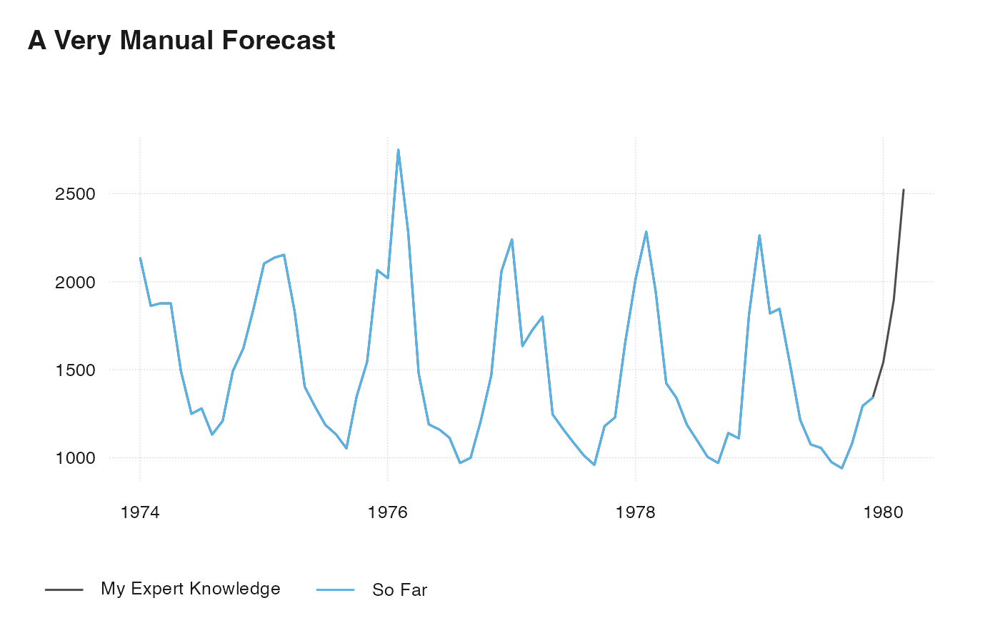

ts_index returns an indexed series, with value of 1 at the base date or
range.
ts_compound builds an index from percentage change rates, starting with 1
and compounding the rates.
ts_compound(x, denominator = 100) ts_index(x, base = NULL)
| x | ts-boxable time series, an object of class |
|---|---|
| denominator | numeric, set equal to one if percentage change rate is given a decimal fraction |
| base | base date, character string, |
a ts-boxable time series, with the same class as the input.
#> fdeaths mdeaths #> Jan 1974 1.0000000 1.0000000 #> Feb 1974 0.7647059 0.8730084 #> Mar 1974 0.9178690 0.8795689 #> Apr 1974 0.7513873 0.8795689 #> May 1974 0.5793563 0.6991565 #> Jun 1974 0.4506104 0.5852858#> id time value #> 1 fdeaths 1974-01-01 1.3076923 #> 2 fdeaths 1974-02-01 1.0000000 #> 3 fdeaths 1974-03-01 1.2002903 #> 4 fdeaths 1974-04-01 0.9825835 #> 5 fdeaths 1974-05-01 0.7576197 #> 6 fdeaths 1974-06-01 0.5892598# \donttest{ ts_plot( `My Expert Knowledge` = ts_chain( mdeaths, ts_compound(ts_bind(ts_pc(mdeaths), 15, 23, 33))), `So Far` = mdeaths, title = "A Very Manual Forecast" )#> Jan Feb Mar Apr May Jun Jul #> 1974 1.3427717 1.1722511 1.1810602 1.1810602 0.9388076 0.7859053 0.8054114 #> 1975 1.3232657 1.3446594 1.3547271 1.1533742 0.8828064 0.8104452 0.7462640 #> 1976 1.2710398 1.7303760 1.4365267 0.9306277 0.7481516 0.7299040 0.7003303 #> 1977 1.4094699 1.0281579 1.0835300 1.1332389 0.7840176 0.7311625 0.6839704 #> 1978 1.2704106 1.4371559 1.2219600 0.8953909 0.8431650 0.7468932 0.6908919 #> 1979 1.4239421 1.1451943 1.1615542 0.9633475 0.7645116 0.6764197 0.6644644 #> Aug Sep Oct Nov Dec #> 1974 0.7116564 0.7607362 0.9388076 1.0199780 1.1615542 #> 1975 0.7129149 0.6625767 0.8475696 0.9721567 1.2999843 #> 1976 0.6103508 0.6285984 0.7601070 0.9230769 1.2955797 #> 1977 0.6374076 0.6034293 0.7418594 0.7733207 1.0413717 #> 1978 0.6317445 0.6103508 0.7173195 0.6984427 1.1401605 #> 1979 0.6134969 0.5914740 0.6801951 0.8142205 0.8437942# }